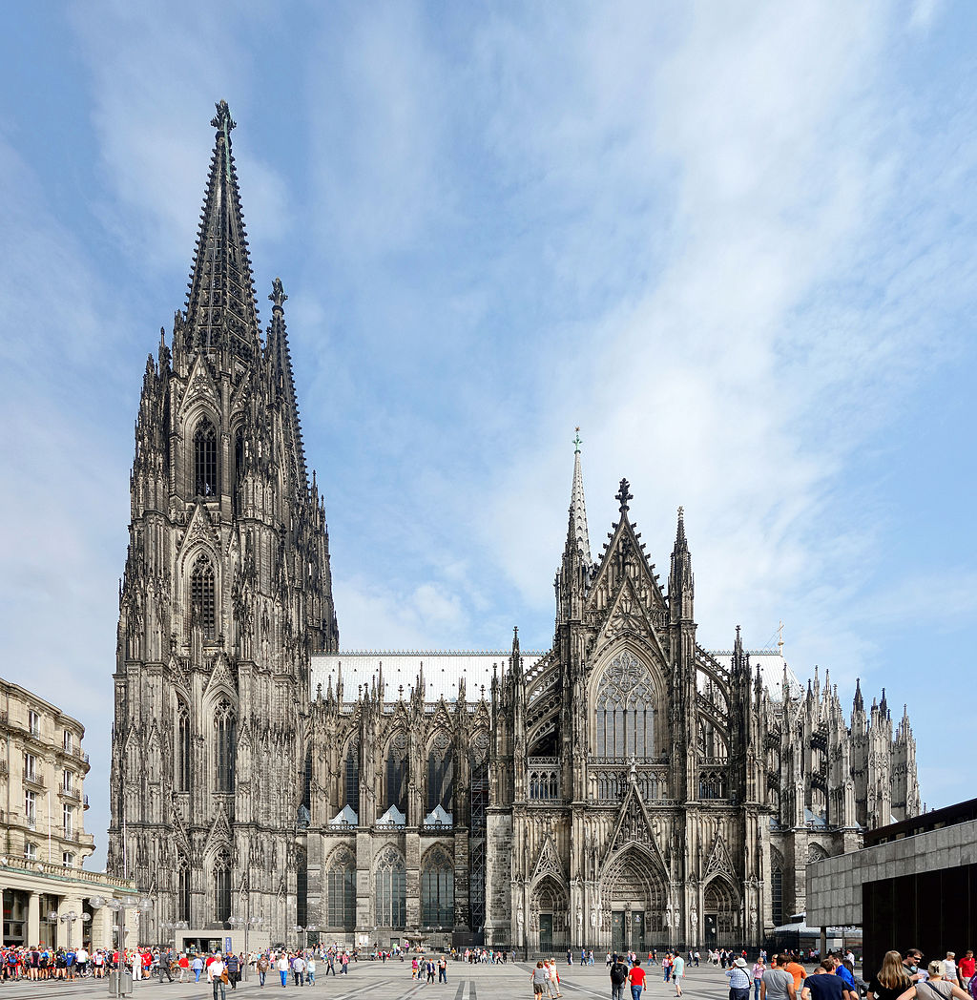
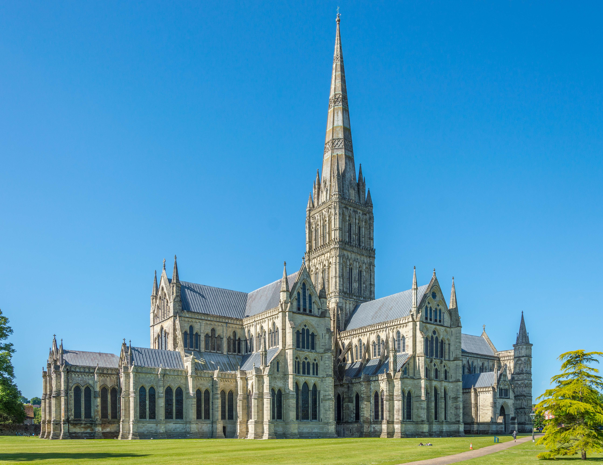
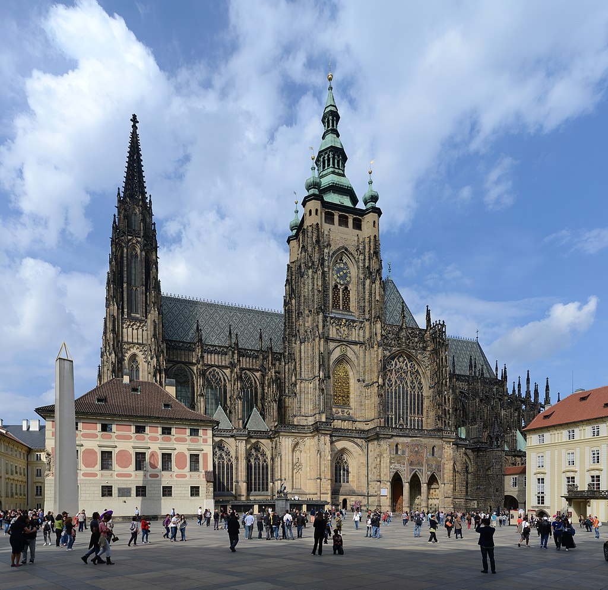

Stiluri arhitecturale reprezentative
Stilul gotic
Perioada: 1150 - 1550Unele dintre cele mai cunoscute biserici din Europa sunt reprezentante ale stilului gotic în athitectură. Acest tip de arhitectură, dominant timp de câteva sute de ani, a început în Franța și apoi a fost adoptat treptat pe teritoriul întregului continent. Acest stil este reprezentat în general de clădiri de piatră cu trei trăsături principale: bolta în arc frânt sau ogiva, arcul de susținere al ogivei (așa-numitul arc butant) și rozeta, prezentă atât în basoreliefuri cât și în alte forme ornamentale.
Printre cele mai cunoscute exemple de arhitectură în stil gotic se numără Notre-Dame din Paris, Catedrala din Koln, Catedrala din Milano, Catedrala din Salisbury.

Notre-Dame din Paris, Franța

Catedrala din Koln, Germania

Catedrala din Milano, Italia

Catedrala din Salisbury, Marea Britanie

Sainte Chapelle, Vincennes, Franța
